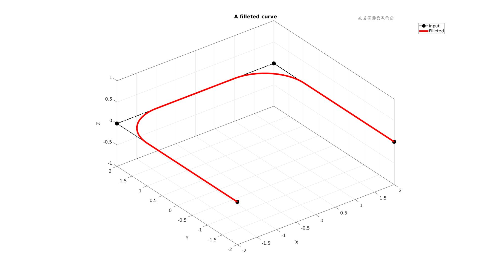
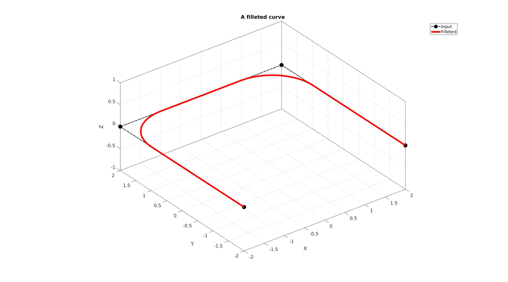
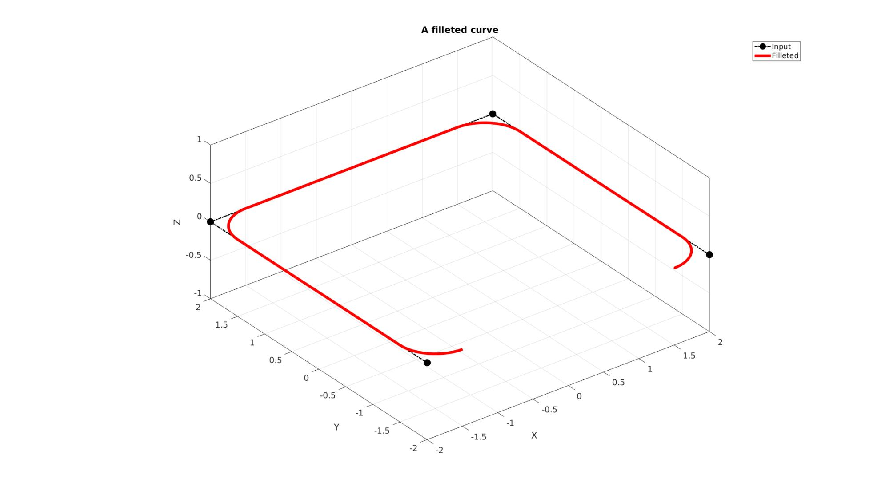

filletCurve
Below is a demonstration of the features of the filletCurve function
Contents
Syntax
[VN]=filletCurve(Vt,r,np,closedLoopOption);
Description
This function fillets a curve based on the input radius r using np points per fillet arc. If closedLoopOpt==1 then closed end conditions are used such that the end and start regions are also filleted.
Examples
clear; close all; clc;
Plot settings
fontSize=15; markerSize1=45; lineWidth1=2; lineWidth2=5; lineWidth3=2; faceAlpha=0.5;
Example 1: Filleting a non-closed curve in 2D
Simulating a curve with sharp features
Vt=2*[-1 -1; -1 1 ; 1 1; 1 -1]; %A square
%Setting control parameters r=1; %Fillet radius np=25; %Number of points used to construct each fillet edge closedLoopOption=0; %Use 1 if curve represents a closed loop but containes unique points VN=filletCurve(Vt,r,np,closedLoopOption);
Plotting results
cFigure; hold on; title('A filleted curve','FontSize',fontSize); xlabel('X','FontSize',fontSize); ylabel('Y','FontSize',fontSize); zlabel('Z','FontSize',fontSize); hp1=plotV(Vt,'k.-.','lineWidth',lineWidth1,'MarkerSize',markerSize1); hp2=plotV(VN,'r.-','lineWidth',lineWidth2); legend([hp1 hp2],{'Input','Filleted'}); axisGeom(gca,fontSize); drawnow;
Example 2: Filleting a closed curve in 2D
%Setting control parameters r=0.5; %Fillet radius np=25; %Number of points used to construct each fillet edge closedLoopOption=1; %Use 1 if curve represents a closed loop but containes unique points VN=filletCurve(Vt,r,np,closedLoopOption);
Plotting results
cFigure; hold on; title('A filleted curve','FontSize',fontSize); xlabel('X','FontSize',fontSize); ylabel('Y','FontSize',fontSize); zlabel('Z','FontSize',fontSize); hp1=plotV(Vt,'k.-.','lineWidth',lineWidth1,'MarkerSize',markerSize1); hp2=plotV(VN,'r.-','lineWidth',lineWidth2); legend([hp1 hp2],{'Input','Filleted'}); axisGeom(gca,fontSize); drawnow;

Example 3: Using multiple-radii
%Setting control parameters r=[0.5 1.5 0 0.75]; %Fillet radii for each point np=25; %Number of points used to construct each fillet edge closedLoopOption=1; %Use 1 if curve represents a closed loop but containes unique points VN=filletCurve(Vt,r,np,closedLoopOption);
Plotting results
cFigure; hold on; title('A filleted curve','FontSize',fontSize); xlabel('X','FontSize',fontSize); ylabel('Y','FontSize',fontSize); zlabel('Z','FontSize',fontSize); hp1=plotV(Vt,'k.-.','lineWidth',lineWidth1,'MarkerSize',markerSize1); hp2=plotV(VN,'r.-','lineWidth',lineWidth2); legend([hp1 hp2],{'Input','Filleted'}); axisGeom(gca,fontSize); view(2); drawnow;
Example 4: Filleting a curve in 3D
Simulating a curve with sharp features
Vt=[0 0 0; 10 0 0; 0 10 0; 10 10 10; 10 10 0; ]; % %Setting control parameters r=2; %Fillet radius np=25; %Number of points used to construct each fillet edge closedLoopOption=0; %Use 1 if curve represents a closed loop but containes unique points VN=filletCurve(Vt,r,np,closedLoopOption); % % Plotting results cFigure; hold on; title('A filleted curve','FontSize',fontSize); xlabel('X','FontSize',fontSize);ylabel('Y','FontSize',fontSize); zlabel('Z','FontSize',fontSize); hp1=plotV(Vt,'k.-.','lineWidth',lineWidth1,'MarkerSize',markerSize1); hp2=plotV(VN,'r.-','lineWidth',lineWidth2); legend([hp1 hp2],{'Input','Filleted'}); axisGeom(gca,fontSize); drawnow;
Example 5: Extruding a filleted curve for CAD like model building
%Sketching side profile Vt=[0 0 0; 10 0 0; 10 10 0; 20 15 0]; %Fillet sketch r=[0 2 4 0]; %Fillet radius np=25; %Number of points used to construct each fillet edge closedLoopOption=0; %Use 1 if curve represents a closed loop but containes unique points [Vc]=filletCurve(Vt,r,np,closedLoopOption); pointSpacing=1; Vc=evenlySpaceCurve(Vc,pointSpacing,'pchip',0);
Plotting sketch
cFigure; hold on; title('The side profile sketch','FontSize',fontSize); xlabel('X','FontSize',fontSize);ylabel('Y','FontSize',fontSize); zlabel('Z','FontSize',fontSize); hp1=plotV(Vt,'k.-.','lineWidth',lineWidth1,'MarkerSize',markerSize1); hp2=plotV(Vc,'r.-','lineWidth',lineWidth2); legend([hp1 hp2],{'Input','Filleted'}); axisGeom(gca,fontSize); view(2); drawnow;
Extruding model
cPar.depth=20; cPar.patchType='tri'; cPar.dir=0; cPar.n=[0 0 1]; cPar.closeLoopOpt=0; numSteps=round(cPar.depth./pointSpacing); numSteps=numSteps+double(iseven(numSteps)); %Force uneven cPar.numSteps=numSteps; [F_tri,V_tri]=polyExtrude(Vc,cPar);
Plotting meshed model
hf2=cFigure; title('The extruded surface mesh','FontSize',fontSize); xlabel('X','FontSize',fontSize);ylabel('Y','FontSize',fontSize); zlabel('Z','FontSize',fontSize); hold on; hp1=plotV(Vc,'r.-','lineWidth',lineWidth2); hp2=gpatch(F_tri,V_tri,'gw'); legend([hp1 hp2],{'Input curve','Extruded surface'}); axis equal; view(3); axis tight; grid on; set(gca,'FontSize',fontSize); axisGeom(gca,fontSize); view(30,30); camlight headlight; drawnow;

GIBBON www.gibboncode.org
Kevin Mattheus Moerman, gibbon.toolbox@gmail.com
GIBBON footer text
License: https://github.com/gibbonCode/GIBBON/blob/master/LICENSE
GIBBON: The Geometry and Image-based Bioengineering add-On. A toolbox for image segmentation, image-based modeling, meshing, and finite element analysis.
Copyright (C) 2006-2023 Kevin Mattheus Moerman and the GIBBON contributors
This program is free software: you can redistribute it and/or modify it under the terms of the GNU General Public License as published by the Free Software Foundation, either version 3 of the License, or (at your option) any later version.
This program is distributed in the hope that it will be useful, but WITHOUT ANY WARRANTY; without even the implied warranty of MERCHANTABILITY or FITNESS FOR A PARTICULAR PURPOSE. See the GNU General Public License for more details.
You should have received a copy of the GNU General Public License along with this program. If not, see http://www.gnu.org/licenses/.